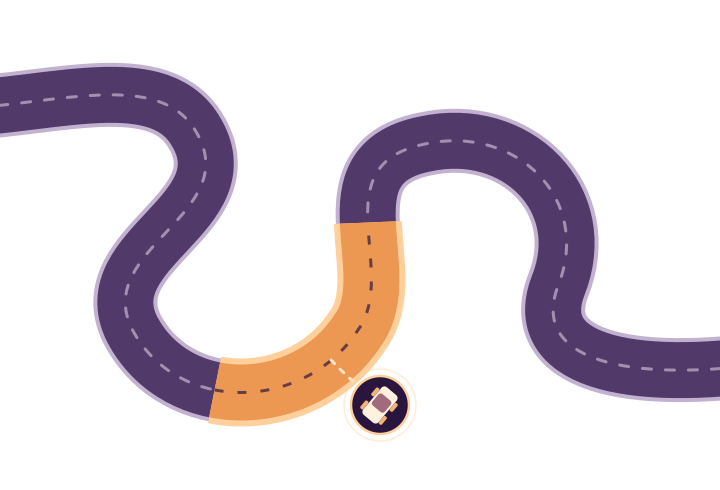

Erdem Uysal
University of Bern
ramazan.uysal@unibe.chICST 2027 · SAN SEBASTIÁN, SPAIN
Advancing the testing of autonomous driving systems through open, reproducible challenges in simulation.
2027 edition Intra-scenario minimization

The goal: Predict whether and where a vehicle will fail to keep its lane, identifying the minimal critical segment of a longer driving scenario that needs to be executed.
The next edition is in preparation. Technical documentation is available now; the organizers will confirm participation details and final dates.
Community discussions ↗THE CHALLENGE
Simulation-based testing of autonomous vehicles can be costly. The aim this year is to reduce how much of each scenario must be executed, rather than removing scenarios from the suite.
The 2027 challenge focuses on intra-scenario minimization: predicting the point at which a vehicle goes out of bounds, so simulation can concentrate on the relevant portion of that scenario.
Each scenario represents a vehicle's behavior in a simulation environment.
Develop a tool that estimates whether and when a vehicle will leave the permitted bounds, using the provided competition interface.
TIMELINE
The 2027 competition milestones from the ICST Challenge Competition Track schedule.
Dates are provisional and subject to confirmation. Deadlines follow Anywhere on Earth (AoE), where applicable.
GET INVOLVED
Technical details live in the GitHub repository, providing a shared source of truth for participants and organizers.
Understand the minimization task, competition rules, and evaluation setup.
2027 guidelines ↗Use the provided gRPC interface, sample implementation, and evaluator as a starting point.
Tools and interfaces ↗Follow the repository instructions for packaging and submitting your tool; check the finalized requirements before submission.
Visit the repository ↗PEOPLE
For questions about this edition, contact a member of the organizing team.
University of Bern
ramazan.uysal@unibe.chPolitecnico di Torino
tommaso.fulcini@polito.itSQuIDS Lab, University of Naples Federico II
luigiliberolucio.starace@unina.itZurich University of Applied Sciences & University of Bern
christian.birchler@unibe.chCHALLENGE HISTORY
Discover previous competitions, resources and presentation slides.